UiO Historisk
Museum.
Et av Norges 50 viktigste prestisjebygg, tegnet av Henrik Bull (1897–1902). ~2 000 m² tak, 4 000 m² fasade, ~600 vindusrammer og ~100 blyglassfag — restaurert mens museet var i full drift.
Hopp til kapittel.
Hvert bilde leder til sin egen del av prosjektet — fra rigg og tak til blyglass.

Et av Norges 50 viktigste prestisjebygg.
UiO eier ~100 byggverk. Ett av dem er Historisk Museum på Tullinløkka — fredet, i Art Nouveau, med Riksantikvaren som vakthund. Vi vant oppdraget på pris, kvalitet og miljø: 9,51 — 9,66 — 10,00.
Åtte fag — én entreprise.
Et generalentreprise-oppdrag av denne kalibren krever at alle fagene jobber tett — sammen og hver for seg.
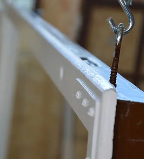
Sparkel & maling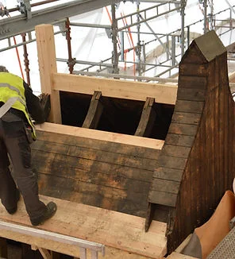
Tømrer & snekker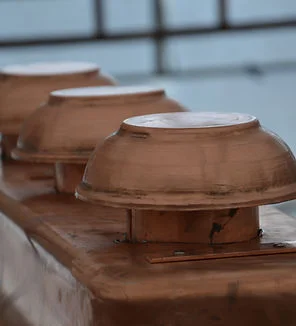
Blikk & tekking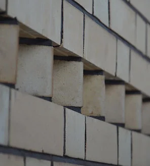
Mur & puss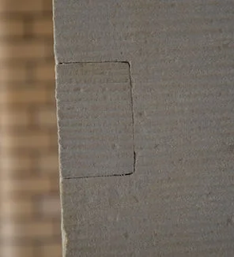
Granitt & sandstein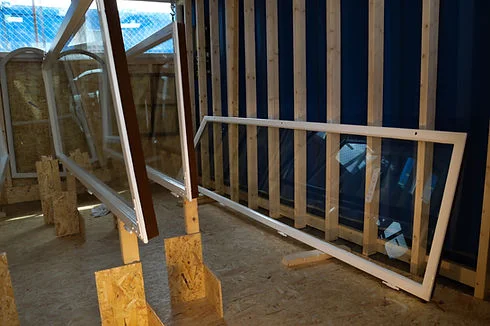
Glass & blyglass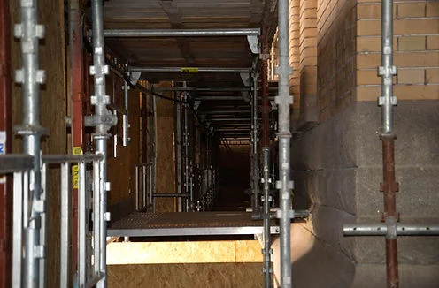
Grunnarbeider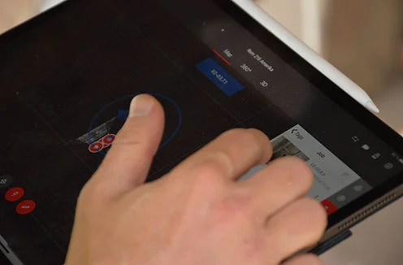
Tekniske fag300 meter stålgjerde
rundt et fredet kvartal.
Etnografiske utstillinger og arkiver av uvurderlig verdi utløste de strengeste krav til adgangskontroll. Sikkerheten ble prosjektert i tett dialog med Nokas og UiOs sikkerhetsavdeling.
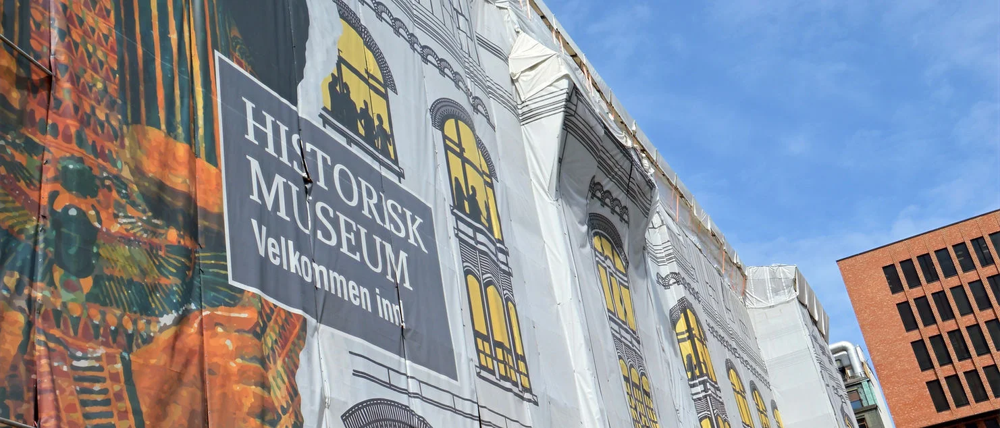
Stillaset ble kledd i dekorert duk og toppet med tak over tak.Museets etnografiske utstillinger og arkiver, inneholdende historiske gjenstander av uvurderlig verdi, utløste svært strenge krav til adgangskontroll, overvåking og innbruddssikkerhet.
Parallelt med etablering av riggområdet måtte vi derfor delta i en rekke møter med sikkerhetsavdelingen til UiO og Nokas. Slik sikret vi gode sikkerhetsrutiner i prosjektet, og foretok tidlig planlegging av sikkerhetstiltak tilpasset det kommende prosjektet.
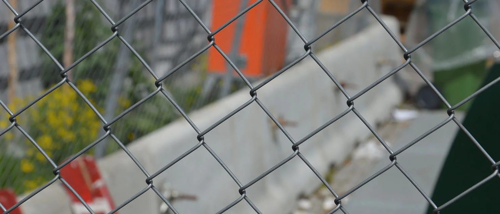
Skallsikring av rigg — betonggriser og 3 m stålgjerder med digitalstyrte porter.Prosjektet startet opp med utplassering av betonggriser rundt hele museumskvartalet på Tullinløkka — i nesten 300 meters lengde.
Til betonggrisene ble det boltet fast tre meter høye stålgjerder med digitalstyrte rondeller og porter som adkomst til riggområdet. Parallelt med stillasmonteringen ble sensorbelysning og videoovervåkningskameraer montert i høyden rundt hele museet.
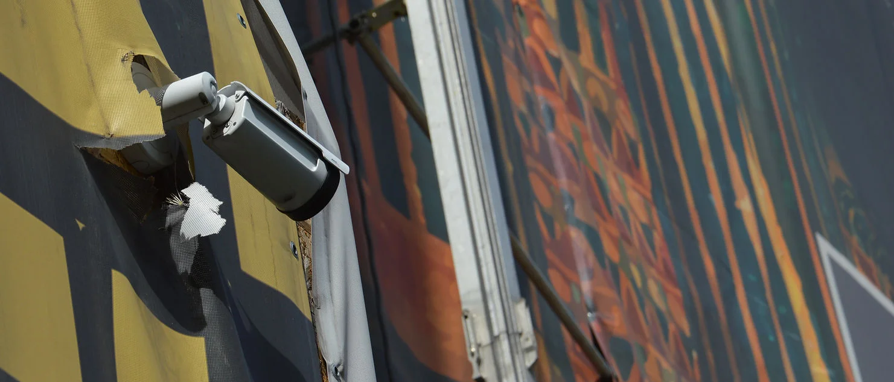
Nokas patruljerte riggen utenom ordinær arbeidstid.I tillegg skulle riggområdet patruljeres av Nokas utenom den daglige bemanningen på plassen for å opprettholde aktivitet i riggområdet på kvelds- og nattestid.
Vi fikk tildelt arbeidstid for egen bemanning på plassen — strenge instrukser måtte overholdes ved evt. avvik til den angitte arbeidstiden. Impulsivt helge- og overtidsarbeid ble ikke akseptert dersom det ikke var varslet iht. sikkerhetsavdelingens instrukser og rutiner.
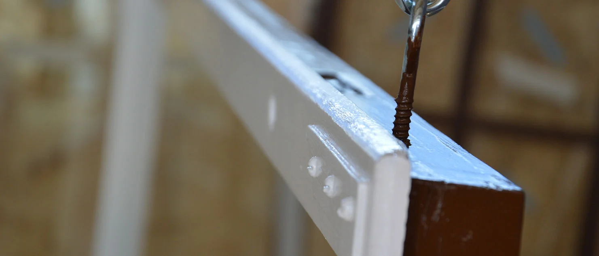
Egne verksteder på riggen: blyglass, malingstørk og murblanding.Byggelederen hos byggherren, Robert Hallingfoss, ønsket muligheten for tett oppfølging av arbeidene for å opprettholde høy kvalitet og påse effektivitet under utførelsen.
Det ble derfor etablert egne arbeidsstasjoner og verksteder på riggområdet. Blant annet ble blyglassverksted, god temperert tørkesone for malte vinduer og blandingssone for murerprodukter oppført.
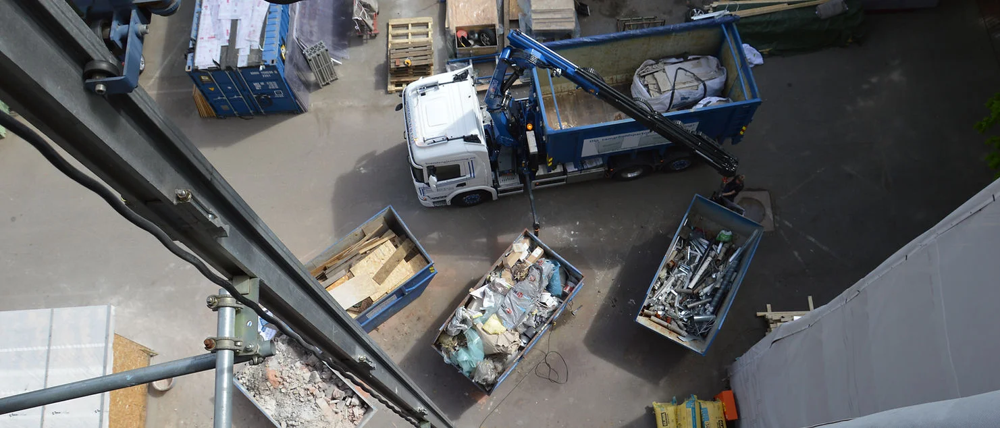
OSB-skjerming og dekorert duk — tak over tak.Stillasets to nederste etasjer ble skjermet med OSB-plater rundt hele bygget innenfor inngjerdingen for ekstra sikkerhet.
Hele stillaset ble kledd i dekorert duk og toppet med tak over tak — for å opprettholde god drift i nedbørsperioder.
På et fredet bygg er rigg ikke bare logistikk. Det er også estetikk og verditap som skal håndteres dag og natt.
2 000 m² tak —
tårn, piper og titalls overlys.
Det første arbeidet som ble påbegynt. Under rivingen avdekket vi opptil 14 cm nedbøyning i takkonstruksjonen rundt overlysene — 4. etasje måtte evakueres.
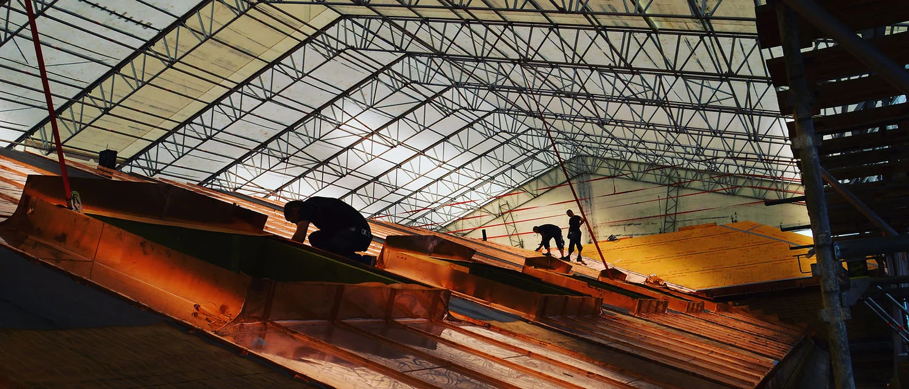
Hele 4. etasje ble evakuert og takets bærekonstruksjon prosjektert på nytt.Taket med sine 2 000 kvadratmeter, tårn, piper, takhatter og titalls overlys var det første arbeidet som ble påbegynt.
Under rivearbeidene ble det observert store svanker i takkonstruksjonen rundt overlysene/takvinduene. Nedbøyningen var opptil 14 centimeter og det ble registrert åpne brudd i flere knutepunkter.
Hele 4. etasje ble evakuert og sammen med byggherren prosjekterte vi frem en arbeidsbeskrivelse på hvordan vi skulle forsterke takets bærekonstruksjon.
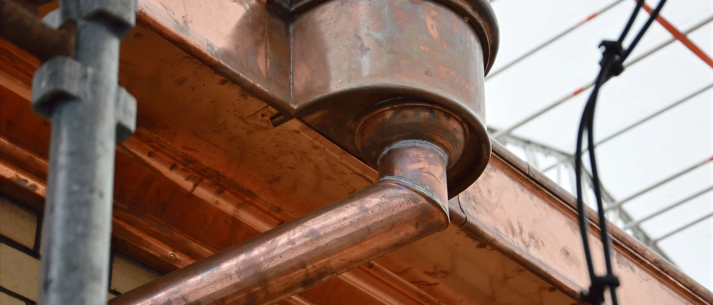
Nedløpssystemet rekonstruert med inntekket treverk og dreide pynteskåler.Nedløpssystemet er komplett restaurert og rehabilitert. Takrenner er rekonstruert med inntekket treverk for å oppnå ønskede former og stivhet.
Tilvirkede profilbeslag er montert mellom kobberrenne og murgesims. Kummene er håndbanket med dreid pynteskål i underside, og alle rennejern og tutband er rehabilitert. Det er også laget spesialverktøy for å gjennomføre de angitte oppgavene.
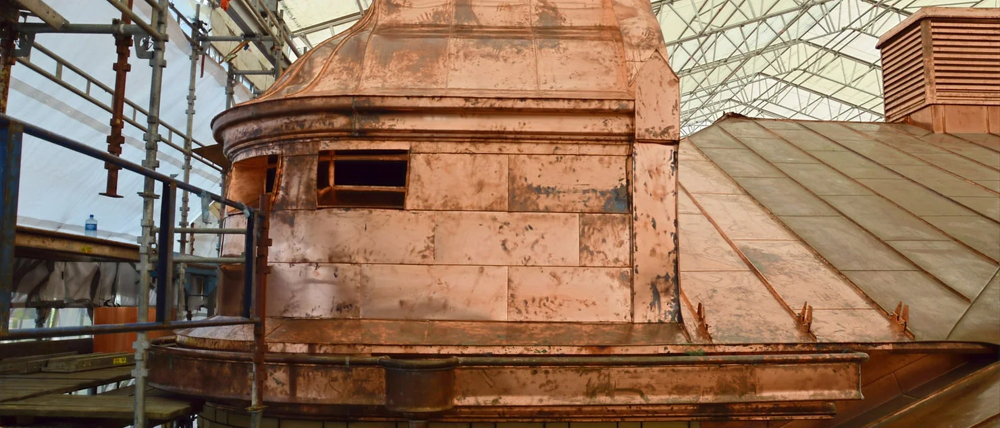
Tårn restaurert, piper rehabilitert, takhatter med buede hjørner i kobber.Tårnene er restaurert, pipene er rehabilitert og et titalls takhatter er innfalset med buede hjørner i kobber — produsert på verksted med former av epoxy og 120 tonns trykkbelastning i glødende tilstand.
Hele taket er tekket på nytt med dobbeltfalset skivetekking. Kobberfangere for snø og håndlagde is-stoppere, samt montering av lynvern, er også utført.
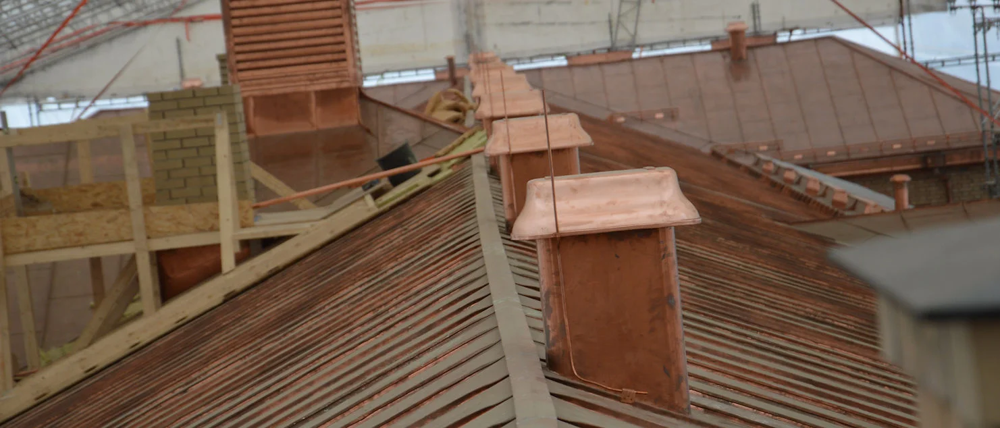
Hver eneste detalj ble pilotert, evaluert og godkjent av Riksantikvaren.Blikkenslagere og -mestere har detaljprosjektert en rekke andre detaljer, og det har gått med 25 tonn kobber til takrenner, beslag, utsmykninger og tekkinger.
For hver eneste detalj er det levert piloter som er blitt evaluert og godkjent av Riksantikvaren. Henrik Bulls tegninger fra slutten av 1880-tallet er blitt kontinuerlig gransket for å gjenskape de arkitektoniske trekkene i alle løsninger.
- — SkiferDobbeltfalset skivetekking over hele taket, kobberfangere for snø.
- — Kobber25 tonn kobber. Renner, beslag og takhatter formet på verksted.
- — TårnTårnene restaurert, pipene rehabilitert, lynvern montert.
40 km fuger,
én sesong.
Utkrafsing av over 40 kilometer mørtelfuger. Pølsespekk i 1. etasje, skyggespekk i etasjene over. 300+ teglstein spesialbestilt fra Tyskland, sandsteinen fra samme brudd som ved oppføringen.
Under prosjektet ble det utkrafsing av over 40 kilometer fuger. Det ble blandet og utført flere felter med farget spekk som Riksantikvaren vurderte og godkjente.
Den første etasjen er utført med pølsespekk, mens de overliggende etasjene er spekket med skyggespekk. Parallelt er det utskiftet over 300 teglstein, spesialbestilt fra Tyskland.
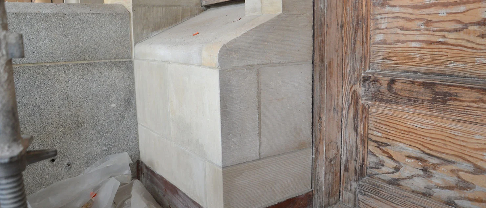
Sandstein fra samme brudd i Tyskland som ved oppføring i 1897.Museet består av flere felter med sandstein og granitt. Sandsteinen er fremskaffet fra samme brudd i Tyskland som eksisterende sandstein ved oppføring av bygningen.
Blokkene er tredd på utstikkende ståldybler og kuttet med spesielt sagblad som har generert en særegen avsporing på sandsteinen. Vi innhentet kompetanse fra Polen til rehabilitering av sandsteinen — et fag med lange tradisjoner der.
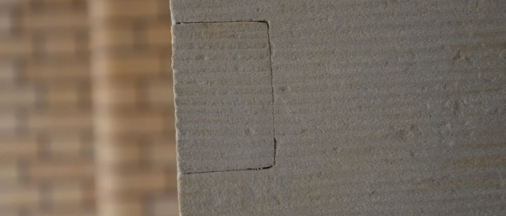
Frest ut og håndmeislet — uten spor av rehabiliteringen.Skadde områder ble forsiktig og kontrollert frest ut, og erstattende felter er håndmeislet fra originalstein og montert på en slik måte at man ikke ser spor av rehabiliteringen.
Der hele steiner er byttet, har utførende gjenskapt sporene fra de spesielle sagbladene som glir inn i eksisterende avsporing fra bygningsoppføringen.
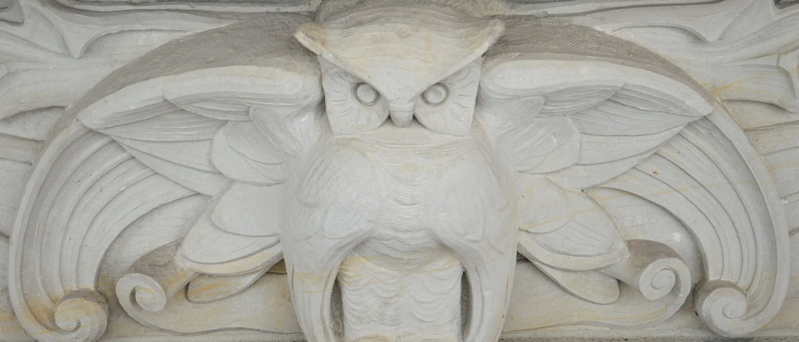
All sandstein og granitt er rengjort med dampvask.All sandstein og granitt er rengjort med dampvask. Granittarbeidene — trappeområder og utvendige søyler — er hovedsakelig planlagt etter demontering av stillas.
Museet har også montert flere statuer med gullforgylning. Disse er restaurert med skinnende resultat.
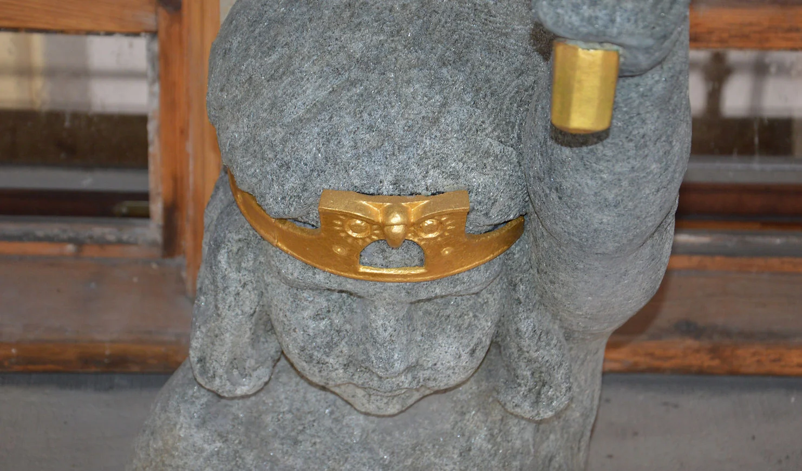
Statuene fikk gullforgyllingen tilbake — skinnende.Materialleverandører, rådgivere og muremester var imponert over resultatet — utført med svært høy kvalitet.
750 vinduer
kartlagt på nytt.
To rader vinduer per felt — varevinduer og yttervinduer. På nært hold viste de antikvariske yttervinduene seg å være i langt dårligere forfatning enn forprosjektet anslo. Hele tilstanden ble revurdert.
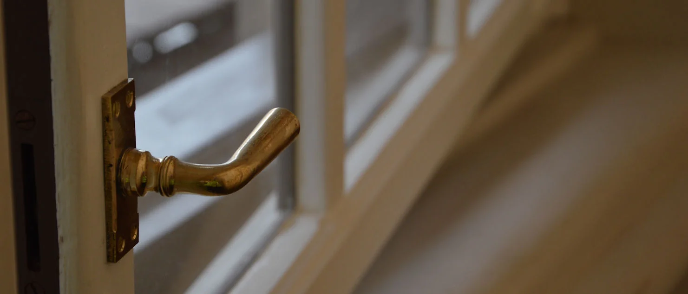
To rader: varevinduer rives og erstattes med sikkerhetsvinduer; yttervinduene restaureres.Vindusfeltene i museet inneholder to rader med vinduer, herunder varevinduer og yttervinduer. De eksisterende varevinduene skulle rives og erstattes med nye sikkerhetsvinduer, mens de utvendige antikvariske trevinduene skulle restaureres.
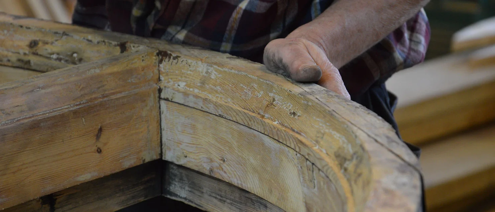
Over 750 vinduer ble kartlagt og inndelt i tilstandsgrader.Etter at stillaset åpnet for bruk, ble de antikvariske yttervinduene inspisert på nært hold. Vinduene viste seg å være i mye dårligere forfatning enn antatt i forprosjektet, og byggherren bestilte en total revurdering av tilstanden.
Museets over 750 vinduer ble derfor kartlagt og inndelt i tilstandsgrader basert på visuell inspeksjon. Arbeidet og den videre restaureringen ble utført av Grøttumsbråtens eftf.
Yttervinduene som ikke hadde varevinduer måtte forsterkes etter strenge krav for å sikre de uvurderlige gjenstandene plassert innenfor dem.
Det ble iverksatt en langvarig prosjektering hvor glasset, limet og treverket måtte sikre styrken etterspurt. Vinduene ble testet og godkjent av Forsvarsbygg, og KNE er stolte over å ha laget to typer antikvariske vinduer med moderne styrke.
Ved fjerning av eksisterende varevinduer smuldret mange av smygene opp og måtte restaureres. Byggets utforming gjorde at hvert smyg hadde satt seg forskjellig, og det ble brukt 3D-scanner for å lage en profil av alle smygene.
Varevinduene ble så bygget etter hver enkel profil. Ved bruk av Leika BLK360 brukte vi moderne teknologi for å sikre god flyt i oppmåling og bygging.
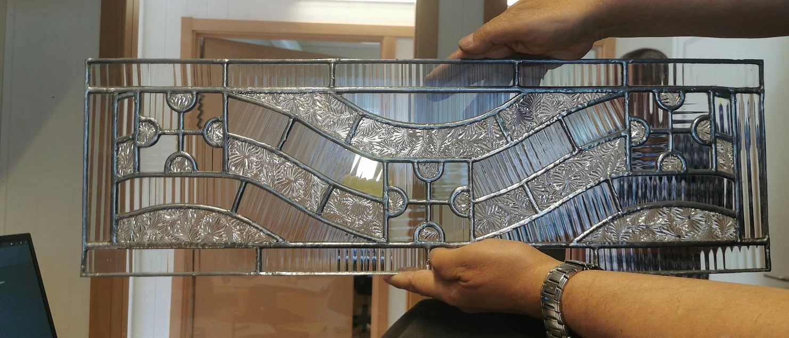
~100 blyglassfag restaurert på etablert blyglassverksted på riggen.Det er gjennomført omfattende blyglassarbeider — disse er fortsatt under arbeid. Mer informasjon kommer når prosjektet er ferdig.
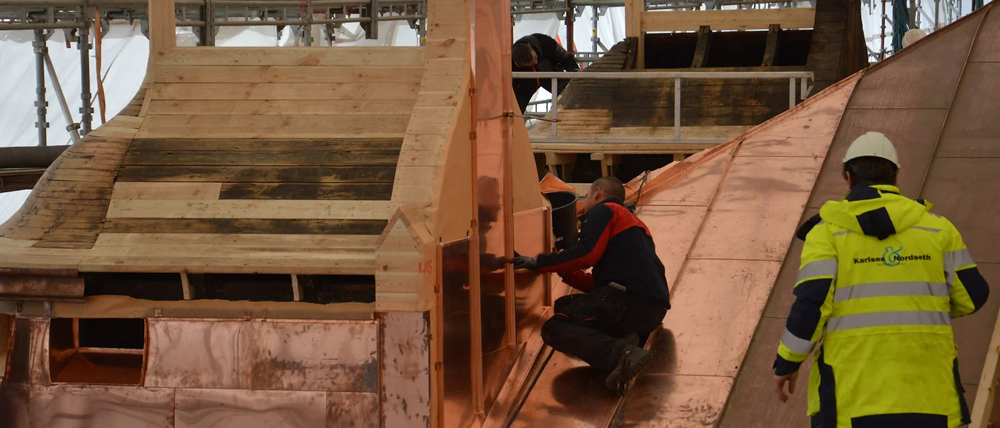
Per dags dato 20+ varevinduer montert — leveranse stanset under COVID-19.Per dags dato har vi montert over 20 varevinduer i museet, men leveransen er foreløpig stanset i forbindelse med COVID-19-situasjonen. Hele fabrikken er stengt ned, og tilhørende elementer som transporteres fra andre land og settes sammen på fabrikken har også stoppet.
Et museum
i full drift.
Sikkerhetsklasse P6B i alle utstillingssaler. Restaurering av smyg og trekninger mens utstillingen pågikk — koordinert nesten daglig.
Museet utførte en ROS-analyse tidlig i prosjektet, hvor det kom frem at samtlige utstillingssaler krevde en sikkerhetsklasse tilsvarende P6B. I tillegg ville museet etter beste evne opprettholde den innvendige driften parallelt med arbeidene til prosjektet — dvs. at vi måtte restaurere vinduene med tilhørende smyg og trekninger mens utstillingen pågikk.
Ettersom prosjektets arbeider var tidkrevende, både med tanke på kvalitet og omfang, besluttet lederne å etablere en innvendig «skallsikring». Altså et fysisk skille som ivaretok sikkerhetskravene til museet — av bygningsarbeidene og museets drift.
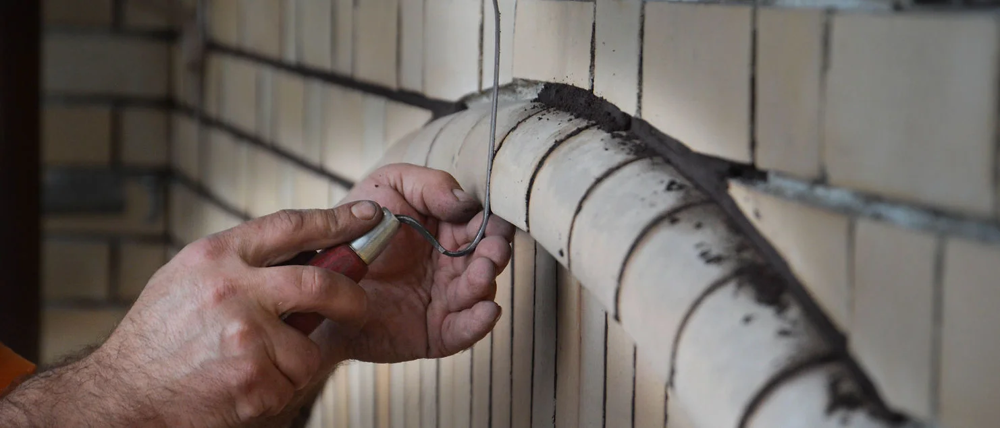
Spekking utvendig vs. maling innvendig — koordinert nesten daglig.Fasadens teglfuger skulle spekkes og sandsteinselementene skulle restaureres — alt imens prosjektet skulle male smyg, trekninger, karmer og vindusrammer. Som nevnt utløste dette et massivt koordineringsarbeid, og styringsegenskapene til Karlsen & Nordseth Entreprenør ble virkelig satt på prøve.
For at spekkeavfall og vanning ikke skulle tilgrise og kvalitetsmessig ødelegge for malingsarbeidene, måtte disse to grensesnittene detaljkoordineres nesten daglig. En samtidighetsfaktor verdt å nevne var driftsavdelingens matrise — som på ingen måte kunne forsinkes ifm. museets markedsføring av de ca. 15 utstillingene.
Et arbeid som krever fingerspissfølelse — også i tidsplanen.
Et bygg, på nært hold.
Et utvalg fra arbeidet på taket, fasaden, vinduene og inne i riggen — fanget mens jobben pågikk.
Vil du vite mer om prosjektet?
Vi tar gjerne en prat om hvordan dette ble løst — og hva vi kan gjøre for ditt bygg.